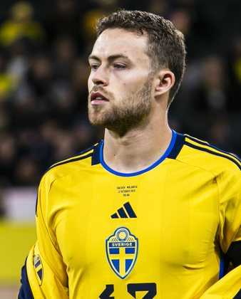

PITCHKEEP
Premier League ranks
Player File · DEF LEE · Premier #176

Gabriel Gudmundsson
DEF · Leeds · age 27 · £4.5m
2025/26 Premier League
| Year | Starts | Min | G | A | xG | xA | CS | GC | Bonus | YC | Sleeper | FPL |
|---|---|---|---|---|---|---|---|---|---|---|---|---|
| 2025/26 | 31 | 2637 | 0 | 0 | 1.1 | 2.89 | 5 | 45 | 8 | 4 | 32.6 | 68 |
FPL news
Injured - Hamstring injury - Unknown return date
Plus
- 32.6 Sleeper BPL 2025 points (Pitch #276).
- Consensus 188.5 vs Sleeper #276 - the industry still believes more than 2025/26 counted.
Minus
- Injured; Hamstring injury - Unknown return date.
- Board spread 134–276 (FPL xGI to Sleeper BPL 2025).
PitchKeep Take · The Premier
Gabriel Gudmundsson is a defender for Leeds, age 27, £4.5m. The Premier ranks him 176th overall by splitting Sleeper BPL 2025 (#276, 32.6 points) with the consensus of 2 other boards (188.5). The industry still has him 88 spots ahead of the 2025/26 Sleeper count. The Premier pays that reputation something, not everything. Brand does not outrun a down year, and a down year does not erase a player Leeds still builds around.
The 2025/26 Premier League line is 31 starts and 2637 minutes, 0 goals and 0 assists, 5 clean sheets, 45 goals against, 65 tackles and 119 CBI. Official FPL scored it at 68 points (2.1 per match) with 8 bonus. Sleeper's table turned the same counting stats into 32.6. Defenders get 10 a goal, 7 an assist, 6 a clean sheet, and −2 a goal against. CBI at 0.4 and tackles at 1 are how a centre-back cracks the overall 50.
Underlying: 1.1 xG, 2.89 xA, 3.98 xGI and -2.9 above expected assists. The defensive events are the floor: 65 tackles, 119 clearances/blocks/interceptions, 5 shutouts. Sleeper is built to notice that. ICT and xGI boards are not, which is why a centre-back's spread on this board is usually ugly and still informative. The friendliest board is FPL xGI at 134; the coldest is Sleeper BPL 2025 at 276.
Market: £4.5m, 6 boards on the file. Price is the FPL tax, not the rank. The Premier is who produced and who the boards still believe. ICT 96.4.
Instruction: he is on the 400, which is already a statement, and he is not a star. Stash in Sleeper if the minutes are real. Do not let a Pitch screenshot make you start him over a Premier top-80. FPL flag: injured; Hamstring injury - Unknown return date. Nearby on The Premier: Calvin Bassey, Mateo Kovačić, Noah Sadiki. Versus The Pitch (Sleeper-only #276), the hybrid moves him up to #176. That move is the third list doing its job.
He is 27, which on this board is neither a dart nor a warning label. Prime-age defenders get ranked on what they just did and whether Leeds still gives them the ball. 2637 minutes says yes. The 2026/27 FPL price (£4.5m) is the app's guess at whether that continues. The Premier is the blend of that guess and the box score.
Full-backs and centre-backs separate on this board by attacking events. 0 goals and 0 assists are how a defender outruns his GA column. Without those, you are betting 5 clean sheets and the CBI stream (119) against 45 goals against at −2 a piece. Leeds's 2026/27 defensive shape is therefore half of this player's rank. The other half already happened, across 31 starts.
How to use the file: The Pitch is the Sleeper-only 400 (he is #276 there). The Premier is the 50/50 with every other board we track. Attack, Midfield, Defence, and Keepers re-rank the same Sleeper table by position. BK Value on this page follows The Premier when you are on the hybrid calculator and The Pitch when you are on the Sleeper calculator. Same curve either way - 12,000 at 1.01. Unranked sources are skipped, never treated as 999, which is why a player missing from Yahoo's XI is not secretly ranked 400th.
Sleeper vs FPL
Same 2025/26 line, two scoring tables
Board graph
Spread 134–276 · 6 sources
Tape · 2025/26 Premier League
Gabriel Gudmundsson Red Card 🟥 | Nottingham vs Leeds | Highlights and Goals | Premier League 26/27
Every Board
Spread 134–276 · 6 sources
| Source | Rank |
|---|---|
| FPL xGI | 134 |
| FPL ICT Index | 138 |
| RotoWire FPL 400 | 184 |
| RotoWire Fantrax / Sleeper 400 | 193 |
| FPL 2025/26 Points | 196 |
| Sleeper BPL 2025 | 276 |
All players · The Premier · The Pitch · PK News · Calculator